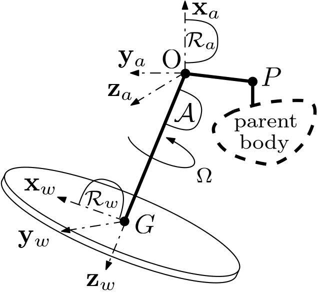
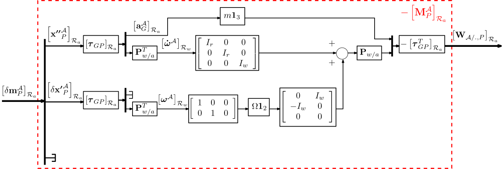
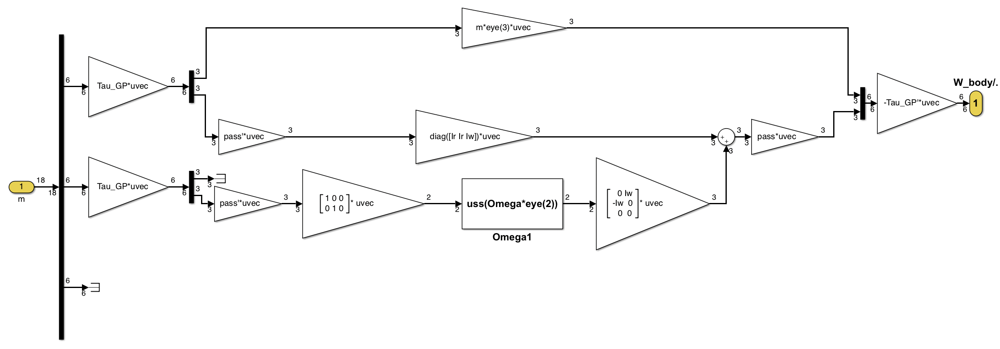

1 port spinning wheel
One-port (6x18) angular momentum linear model
It computes the $(6 \times 18)$ linear dynamic model of a body $\mathcal{A}$ characterized by an on-board angular momentum (spinning wheel): i.e. the transfer from the motion vector imposed to the spinning wheel housing to the wrench applied by $\mathcal{A}$ to another (parent) body
- in its housing body frame $\mathcal{R}_a$,
- at the point $P$ : the connection point with another (parent) body
See also: General notations, 1-port NASTRAN flexible body, 1-port flexible body, Multi-Port_rigid_body
Contents
Description
Let us consider the spinning wheel depicted in the following Figure and characterized by the wheel mass $m$, the wheel axial and radial inertia $I_w$ and $I_r$, the spinning rate $\Omega$ around the wheel axis $\mathbf{z}_w$ and the geometry of the wheel center of mass $G$ and the connection point $P$ in the frame $\mathcal{R}_a = (O,\mathbf{x}_a,\mathbf{y}_a,\mathbf{z}_a)$.

Under the following assumption:
- [H1] $\Omega$ and $\mathbf{z}_w$ (the spinning rate and the spin axis of the wheel) are constants in frame $\mathcal{R}_a$,
- [H2] the spinning wheel is balanced: i.e. $\left[\mathbf{I}^{\mathcal{A}}_G\right]_{\mathcal{R}_w}=\left[\begin{array}{ccc} I_r & 0 & 0 \\ 0 & I_r & 0\\ 0 & 0 & I_w\end{array}\right]$
- [H3] The mass of the wheel housing is null.
Note that the wheel frame $\mathcal R_w=(G,\mathbf{x}_w,\mathbf{y}_w,\mathbf{z}_w)$ is attached to the wheel axis but does not spin: $\mathcal R_w$ is motionless in $\mathcal R_a$.
The dynamic model $\mathbf{M}^{\mathcal{A}}_G$ of the wheel at point $G$ is governed by the following equations:
$\bullet$ At point $G$ the Newton-Euler equations read: \begin{equation} \mathbf{F}_{\mathcal{./A}}=m\mathbf{a}^{\mathcal A}_G \end{equation} \begin{equation} \mathbf{T}_{\mathcal{./A},G}=\frac{d\mathbf{H}^{\mathcal{A}}}{dt}|_{\mathcal{R}_w}+\boldsymbol{\omega}^{\mathcal A}\wedge\mathbf{H}^{\mathcal{A}} \end{equation}
where $\mathbf{H}^{\mathcal{A}}=\mathbf{I}^{\mathcal{A}}_G\boldsymbol{\omega}^{\mathcal A}+I_w\Omega\mathbf{z}_w$ is the total angular momentum of the wheel and $\boldsymbol{\omega}^{\mathcal A}$ is the angular rate vector of the parent body (or the wheel housing) w.r.t. inertial frame. \begin{equation} \mathbf{T}_{\mathcal{./A},G}=\mathbf{I}^{\mathcal{A}}_G\dot{\boldsymbol{\omega}}^{\mathcal A}+I_w\underbrace{\frac{d(\Omega\mathbf{z}_w)}{dt}|_{\mathcal{R}_w}}_{=0\;\mbox{([H1])}}+\underbrace{\boldsymbol{\omega}^{\mathcal A}\wedge\mathbf{I}^{\mathcal{A}}_G\boldsymbol{\omega}^{\mathcal A}}_{\approx 0\;\mbox{( 2-nd order term)}}+\boldsymbol{\omega}^{\mathcal A}\wedge I_w\Omega\mathbf{z}_w \end{equation} \begin{equation} \mathbf{T}_{\mathcal{./A},G}= \mathbf{I}^{\mathcal{A}}_G \dot{\boldsymbol{\omega}}^{\mathcal A} -I_w\Omega (^*\mathbf{z}_w)\boldsymbol{\omega}^{\mathcal A} \end{equation}
$\bullet$ In projection in the frame $\mathcal{R}_w$, $[(^*\mathbf{z}_w)]_{\mathcal{R}_w}=\left[\begin{array}{ccc} 0 & -1 & 0 \\ 1 & 0 & 0\\ 0 & 0 & 0\end{array}\right]=\left[\begin{array}{cc} 0 & -1 \\ 1 & 0 \\ 0 & 0 \end{array}\right]\left[\begin{array}{ccc} 1 & 0 & 0 \\ 0 & 1 & 0\end{array}\right]$ (a rank $2$ matrix).
Taking into account:
$\bullet$ the DCM between frames $\mathcal{R}_w$ and $\mathcal{R}_a$: $\mathbf{P}_{w/a}=\mathbf{P_z}_w\left[\begin{array}{ccc} \mbox{det}(\mathbf{P_{z}}_w) & 0 & 0\\ 0 & 1 & 0 \\ 0 & 0 & 1\end{array}\right]$ with: $\mathbf{P_z}_w=\left[\mbox{null}([\mathbf{\tilde{z}}_w]^T_{\mathcal{R}_a})\quad [\mathbf{\tilde{z}}_w]_{\mathcal{R}_a}\right]$ and $\mathbf{\tilde{z}}_w=\mathbf{z}_w/\|\mathbf{z}_w\|$,
$\bullet$ the kinematic model $\boldsymbol\tau_{GP}$ between points $G$ and $P$,
then the direct dynamics model $-\mathbf{M}^{\mathcal{A}}_P$ of the wheel $\mathcal{A}$ at point $P$, i.e. the $6\times 18$ transfer from the motion vector $\delta\mathbf m^\mathcal{A}_P=\left[{\boldsymbol{\mathbf{x}''}^\mathcal{A}_P}^T\;\;{\delta\boldsymbol{\mathbf x'}^\mathcal{A}_P}^T\;\;{\delta\mathbf{x}^\mathcal{A}_P}^T\right]^T$ at the point $P$ to the wrench $\mathbf{W}_{\mathcal{A/.},P}=\left[ \mathbf{F}_{\mathcal{A/.}}^T \;\; \mathbf{T}_{\mathcal{A/.},P}^T \right]^T$ applied by $\mathcal{A}$ to the parent body, projected in the body frame $\mathcal R_a$ can be represented by the following block diagram:

Ports
Input:
Output:
Parameters
All parameters are expressed in the inherit body frame $\mathcal{R}_a$. Only the the spinning rate $\Omega$ can be an uncertain parameter declared with "ureal".
The main parameters are:
- the wheel axis: $[\mathbf{z}_w]_{\mathcal{R}_a}$,
- the wheel mass (Kg): $m$,
- the wheel axial inertia ($kg.m^2$): $I_w$,
- the wheel radial inertia ($kg.m^2$): $I_r$,
- the $3\times 1$ vector position of $G$ ($m$): $[\overrightarrow{OG}]_{\mathcal{R}_a}$,
- the $3\times 1$ vector position of $P$ ($m$): $[\overrightarrow{OP}]_{\mathcal{R}_a}$,
- the spinning rate (rd/s): $\Omega$.
Simulink diagram under the mask

with: $\mathrm{pass}=\mathbf{P}_{w/a}$.